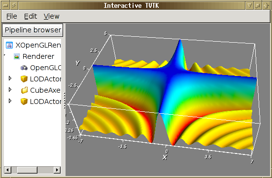

||<#80FF80> This page is about the tvtk.tools.mlab module. You are strongly advised to use the more recent mayavi.mlab module which can also be used from ipython -wthread or as a library inside another application.||
The ``mlab.py`` module allows for simple 3D plotting of objects. It provides an object oriented approch to 3d visualization.
It relies on the simple TVTK module, rather than on the full blown Mayavi application. As a result it has less dependencies. However, it is harder to extend and more limited. The developers are not planning any feature addition to this module, and we strongly advise you to use the Mayavi mlab module, which provides the same usecases, but with more functionalities and is under constant development. For more information, you can read the relevant section of the Mayavi user guide
‘’’ Table of Contents ‘’‘
TableOfContents
||<#FF8080> Important: All these examples must be run in “ipython -wthread” or in a Wx application (like pycrust, or the Mayavi2 application). They will not work if you don’t use this option.||
Start with `ipython -wthread` and paste the following code:
.. code-block:: python
import scipy
# prepare some interesting function: def f(x, y):
return 3.0*scipy.sin(x*y+1e-4)/(x*y+1e-4)x = scipy.arange(-7., 7.05, 0.1) y = scipy.arange(-5., 5.05, 0.1)
# 3D visualization of f: from enthought.tvtk.tools import mlab fig = mlab.figure() s = mlab.SurfRegular(x, y, f) fig.add(s)
from scipy import *
[x,y]=mgrid[-5:5:0.1,-5:5:0.1]
r=sqrt(x**2+y**2)
z=sin(3*r)/(r)
from enthought.tvtk.tools import mlab
# Open a viewer without the object browser:
f=mlab.figure(browser=False)
s=mlab.Surf(x,y,z,z)
f.add(s)
s.scalar_bar.title='sinc(r)'
s.show_scalar_bar=True
# LUT means "Look-Up Table", it give the mapping between scalar value and color
s.lut_type='blue-red'
# The current figure has two objects, the outline object originaly present,
# and the surf object that we added.
f.objects[0].axis.z_label='value'
t=mlab.Title()
t.text='Sampling function'
f.add(t)
# Edit the title properties with the GUI:
t.edit_traits()
The implementation provided here is object oriented and each visualization capability is implemented as a class that has traits. So each of these may be configured. Each visualization class derives (ultimately) from MLabBase which is responsible for adding/removing its actors into the render window. The classes all require that the RenderWindow be a `pyface.tvtk.scene.Scene` instance (this constraint can be relaxed if necessary later on).
This module offers the following broad class of functionality:
To see nice examples of all of these look at the `test_*` functions at the end of this file. Here is a quick example that uses these test functions:
from enthought.tvtk.tools import mlab
f = mlab.figure()
mlab.test_surf(f) # Create a spherical harmonic.
f.pop() # Remove it.
mlab.test_molecule(f) # Show a caffeine molecule.
f.renwin.reset_zoom() # Scale the view.
f.pop() # Remove this.
mlab.test_lines(f) # Show pretty lines.
f.clear() # Remove all the stuff on screen.